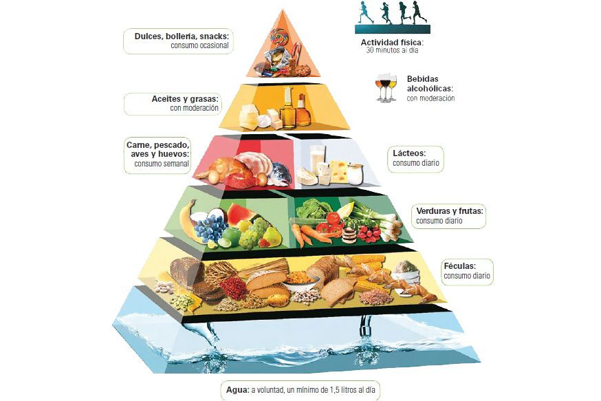
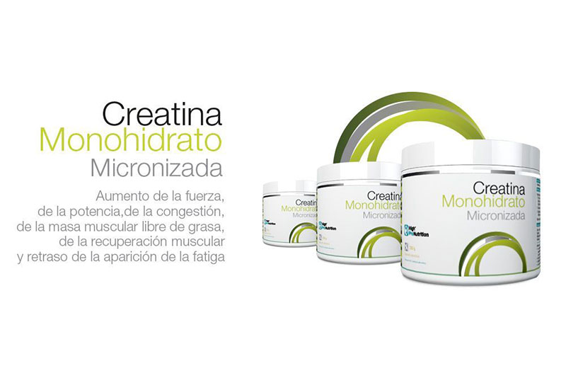
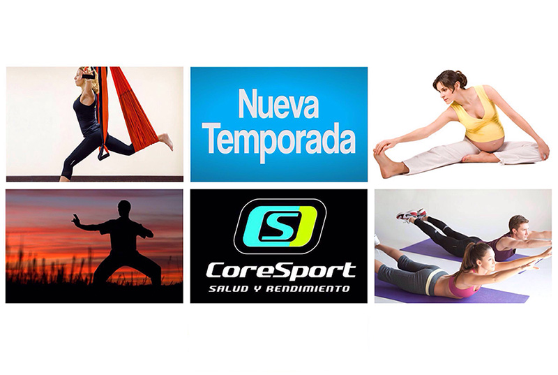
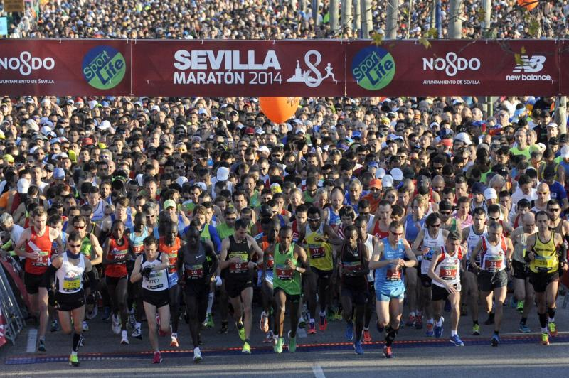
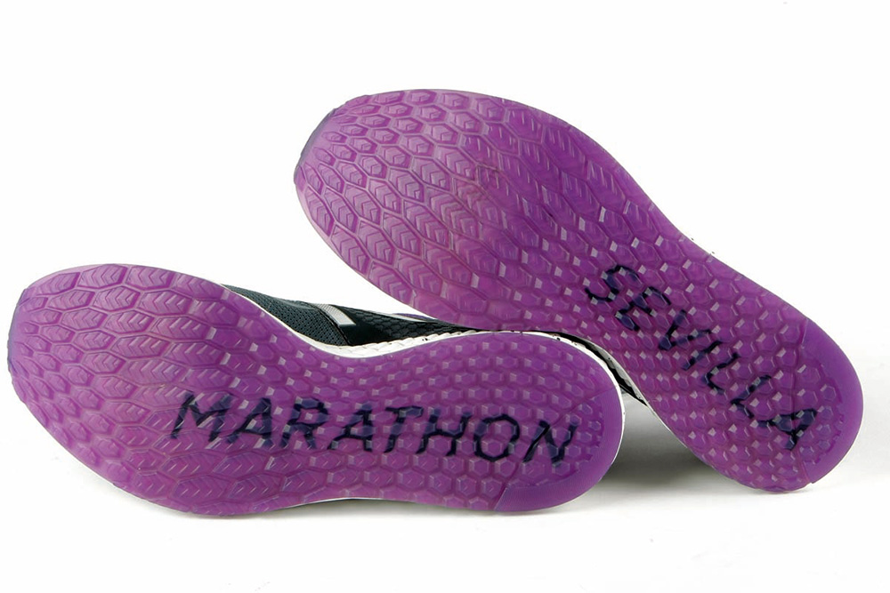
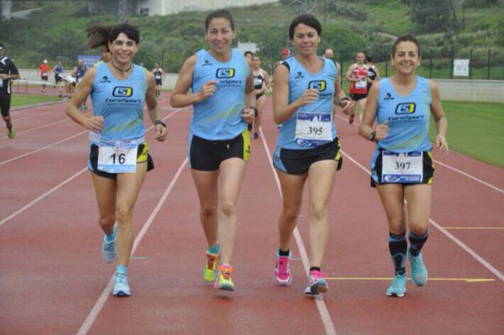
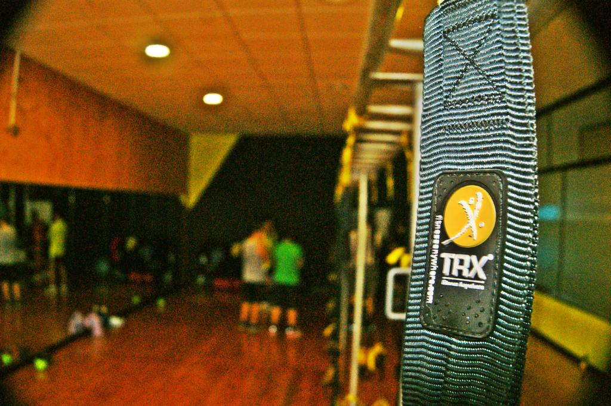
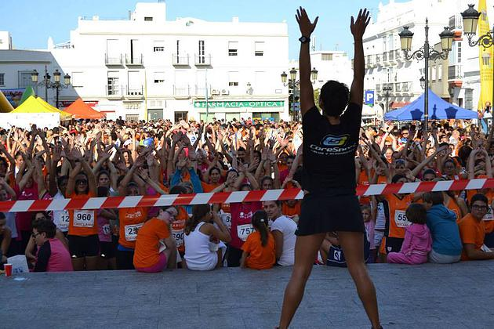

Blog
¿Quieres adelgazar? ¡¡¡NO te pongas a dieta!!!
06 de Enero de 2017

Ponerse a dieta es la cosa más absurda del mundo: te pegas 3 meses comiendo raro y pensando sólo en lo que te
toca comer, o lo que es peor aún, lo que no puedes comer, contando los días que te quedan para terminar y poder
ir a McDonals o comerte tus galletas de chocolate favoritas, y luego volver a comer normal.
Aquí lo único que tenemos claro es que si necesitas adelgazar es porque la forma en la que comes actualmente NO
es correcta (o al menos no es la mejor para ti), y te hace engordar. De modo que si después de tu sacrificio de
3 meses vuelves a tu dieta o hábito anterior, lo lógico es que vuelvas a ganar peso.
Entonces... ¿cómo se hace?
Todo el mundo conoce el refrán “una manzana al día aleja al doctor de tu vida” y mucha gente piensa que es porque la manzana es una fruta muy sana (que lo es), pero en este refrán la clave no es la manzana, es “al día”. Como todo en la vida, la clave está en la constancia, y en este caso en los buenos hábitos o hábitos saludables.
Cuando te acostumbras a comer de una forma no adecuada para ti, las consecuencias darán la cara tarde o temprano. Y digo
no adecuada para ti porque sí que puede ser adecuada para otra persona.
Cada persona tiene unas necesidades energéticas únicas, y del mismo modo que tus gafas a mí no me sirven, no a todo el
mundo le sirve comer igual que otro. Por eso es muy importante que comas de la forma que más se adapte a tus necesidades,
que van a ser diferentes en función de tu peso, edad, actividad física y, sobretodo, que se adapte a tus horarios.
Para ello lo mejor sería ponerte en manos de un profesional que te enseñe a comer correctamente y te ayude a cambiar y
mejorar tus hábitos de comidas. Con esto no sólo conseguirás perder peso, sino que empezarás a encontrarte muy bien, más
ligero, no tendrás pesadez ni hinchazón de barriga, irás al baño con regularidad, dormirás y descansarás mejor e incluso
tendrás mejor estado de anímo y más vitalidad.
Los cambios nunca son fáciles, pero con unas pequeñas pautas, un poco de concienciación y, como se suele decir, poquito a
poco, conseguirás mejorar tu vida y tu salud.
… Y si además tienes una patología crónica, unos hábitos alimenticios adecuados puedes ayudar a minimizar los síntomas de
forma notoria. Diabetes, migraña, colitis ulcerosa, Crohn, dispepsia, problemas renales, hepáticos o enfermedades inflamatorias
son, entre otras muchas, enfermedades que pueden mejorar notablemente con una correcta alimentación.
Consúltanos sin compromiso y te orientaremos sobre la forma de conseguirlo.
Reducir¿Realizas entrenamientos de fuerza? Toma Creatina
21 de Diciembre de 2016
Está claro que cuando haces actividad física consumes energía. Esta energía (energía química procedente del ATP, la moneda energética del organismo) se transformará en energía mecánica gracias a la contracción muscular, y producirá movimiento.
Leer más¿De dónde saco esa energía?
En función del tipo de actividad, o mejor dicho, de la intensidad de la actividad física en cuestión, la energía vendrá dada por un sustrato energético u otro. Digamos que el organismo tiene diferentes tipos de gasolinas o de combustibles. Cuando realizamos actividad física de resistencia, los combustibles empleados para producir el movimiento son mayormente grasas y glucógeno muscular y hepático por vía aeróbica.
Para trabajos de fuerza y/o potencia, de alta intensidad y corta duración, el combustible que emplearemos será el ATP almacenado en el propio músculo. Esta reserva de ATP tiene una duración muy corta (pocos segundos) y cuando se agota, la Creatina es capaz de producir ATP rápidamente para continuar con el ejercicio unos cuantos segundos más. De este modo, con unos buenos depósitos de Creatina podremos alargar el trabajo de fuerza, mejorando el rendimiento, la fuerza y contribuyendo a la ganancia de masa muscular.
Si además combinamos la suplementación de Creatina con Beta-Alanina, los beneficios serán mayores por su efecto sinérgico, además de aumentar los niveles de carnosina, que produce aumento de la masa muscular y mejora la recuperación post entreno.
ReducirNueva Temporada
18 de Agosto de 2016
La temporada de invierno empieza en Septiembre y para reservar tu plaza deberás confirmarla lo antes posible. El nuevo horario de clases de TRX será:
MAÑANAS: 08.00h / 09.15h / 10.30h / 11.45h
TARDES: 15.00h / 16.15h / 17.30h / 19.00h / 20.15h / 21.30h
No sólo continuamos con las clases de TRX, también podéis seguir disfrutando de todos nuestros servicios y de las novedades que os traemos esta temporada:
- Clases de pilates, pilates para embarazadas y pilates privado con máquinas (grupos reducidos, 7 u 8 personas máximo)
- Clases de AEROPILATES, novedoso en Chiclana, donde Coresport una vez más apuesta por traeros lo último para vuestro disfrute
- Yoga (Grupos muy reducidos)
- Yoguilates (mezcla de yoga y pilates)
- Tai Chi / Chi Kung
- Depilación láser de diodo con nuestra empresa de confianza BODY CULT
- Planificación deportiva, atletas, triatletas, opositores…
- Entrenamientos personales (en nuestras instalaciones y outdoor)
- Club de iniciación de atletismo
- Nutrición, dietas de adelgazamiento, dietas para deportistas o embarazo y lactancia
- Masajes (deportivos, descontracturantes, anticelulíticos, reflexología podal, ventosas, acupuntura y vendaje neuromuscular)
Agradecer la fidelidad a todos los que siguen con nosotros desde el principio, a los que se han ido incorporando al equipo Coresport y a todas la personas nuevas que vengan les damos la BIENVENIDA!!
Teléfono de contacto: 856923457
PÁG WEB: www.coresport.es
FACEBOOK (página): Coresport
TWITTER: @coresport1
INSTAGRAM: coresportchiclana
Entrenamiento Invisible
19 de Febrero de 2016
A menos de 48h de la Maratón de Sevilla ya toda la tarea está hecha; supongo que ya no te pondrás las zapatillas hasta el domingo (ellas también tienen que descansar). Es hora del entrenamiento invisible.
En función de tu peso necesitarás entre 2500 y 3500 Kcal para afrontar los 42,192 Km. Para este cálculo hay una formula muy sencilla: 1 Kcal x Kg de peso x Km, por lo que para una persona de 70 Kg el gasto será de 1 x 70 x 42,192 = 2953 Kcal
Leer másEl combustible a emplear vendrá dado en función de la intensidad. De modo que a mayor intensidad (o cuanto menos tiempo hagas) utilizarás más carbohidratos, porcedentes del glucógeno hepático, muscular y glucosa sanguínea, y a menor intensidad (cuanto más tiempo tardes) utilizarás más cantidad de grasas. El beneficio de estas últimas es que las reservas son prácticamente ilimitadas. El único pero es que no te van a permitir ritmos altos.
Si durante la maratón te vas a mover a unas intensidades en torno al 75%, podremos extrapolar que utilizarás un 75% de carbohidratos (aproximadamente) y un 25% de grasas.
Redondeando los resultados anteriores obtenemos que para una persona de 70Kg harán falta 2250 Kcal de hidratos de carbono, lo cual suponen 562g (1g de HC tiene 4 kcal) y otras 750Kcal de grasa, que son 83g de este macronutriente.
¿Entonces?
El hígado es capaz de albergar 50g de glucógeno, y el músculo, en función del peso, entre 120 y 450g de glucógeno. Esto quiere decir que el domingo tienes que llegar con tus reservas de glucógeno lo más cargadas posible. Para ello tendrás que comer 80–90g de carbohidratos en las proximas comidas, acompañado de 20g de grasa y sin olvidar el aporte de proteína (sobretodo glutamina, que ayuda al almacenamiento de carbohidratos en el músculo en forma de glucógeno).
¿Y eso a qué se traduce?
Para obtener 90g de HC tengo que comer:
- 135g de copos de avena
- 120g de arroz, mijo, quinoa o cualquier otro cereal
- 120g de pasta (aunque este alimento yo no lo recomiendo)
- 450g de patata o boniato (este último siempre y cuando no te de gases)
- 180g de pan (preferiblemente de espelta)
- En cuanto a la fruta, una pieza de fruta tiene unos 15-20g de carbohidratos. Interesante el aporte en glucosa de uvas y bayas. Frutas desecadas como pasas, higos, dátiles, orejones, etc. tienen mayor concentración de azúcares.
Importante además evitar alimentos flatulentos como legumbres o ciertas verduras.
No olvides añadir grasas como:
- Coco rallado (3 cucharadas)
- Aceite de oliva virgen extra
- Aceite o manteca de coco (15g)
- Aguacate
- Frutos secos
Y tampoco dejes atrás alimentos proteícos, tómalos en las cantidades habituales.
Y para que todo esto funcione, mucha agua, 1 litro por cada 1000 kcal, por lo que si bebes en estos días previos 3-4 litros de agua no estría mal.
El día de la carrera evita hacer experimentos y desayuna lo de siempre, o lo que hayas tomado en tus entrenamientos de tirada larga. No olvides ponerle a tu desayuno un buen cazo de BCAA's y Glutamina, y tómate luego otra dosis 45min antes de la salida. Tus piernas te lo agradecerán.
Y con todo esto, si conseguimos llenar los depósitos de glucógeno, todavía no será suficiente, por lo que durante la carrera deberás tomar un gel a los 75 min, otro a los 120 y a partir de esta segunda hora, continúa tomando uno cada 30 min, y no olvides tomar agua encima para bajarlo.
La hidratación será tambien muy importante: Durante el esfuerzo, a través del sudor se pierde agua y electrolitos (Na, Cl, Mg y K). Si tomas sólo agua, estás empeorando tu situación porque diluyes la sangre, bajando aún más la concentración de estos minerales, con el consecuente riesgo de sufrir una hiponatremia. Así que procura tomar sales durante la carrera, o tomar bebidas isotónicas en los avituayamientos, pero mézclalas con agua, puras está muy concentrada y te puede dar problemas estomacales (puedes mezclarlas en el vaso o en el estómago, bebiendo un poco de cada cosa).
Y si con todo esto en el estómago todavía eres capaz de correr 42 Km, eres un máquina, jejeje. Y si no, siempre queda la opción básica, emulando a Philipides que lo hizo con lo puesto y encima en sandalias.
ReducirLa "Vuelta al Cole" de los Atletas Populares
21 de Agosto de 2015
Agosto, calor, sol, playa, vacaciones, salidas más frecuentes, menos horas de sueño, helados, barbacoas...... se unen una serie de factores que no propician para nada el volver a ponerse las zapatillas e iniciar una nueva temporada. Pero... no es así del todo, a otros, ya se le hace un poco raro el no hacer lo que hace durante toda la temporada, entrenar, participar en carreras, los buenos ratos con tu grupo de entrenamiento, el sufrir entrenando, etc... incluso algunos el corto periodo de descanso activo se le hace eterno. El deportista que experimenta estas sensaciones podemos decir con mayúscula que esta atrapado en una tela de araña que cada vez se expande más por todos los rincones de nuestro país y que no es otra cosa que el fenómeno "RUNNER".
Leer másOs doy una serie de consejos que tenéis que tener en cuenta para que la vuelta al trabajo sea más productiva:
-
1. Lo primero que tenemos que hacer es plantearnos un objetivo. Un objetivo real, algo que podamos conseguir teniendo en cuenta nuestra disposición y nuestras capacidades. El plantearnos un objetivo hará que en los momentos de bajada, saquemos ese extra que tenemos para acabar ese entrenamiento que se nos está resistiendo, o ese día de lluvia en que no te apetece salir.
-
2. Cuidado con las modas. Carreras de larga distancia (maratones, ironman....) Mi recomendación es que tengáis objetivos en principio factibles de conseguir, y que consultes con un profesional si te ve preparado para intentar estas hazañas. Esto ayudará a no lesionarnos y a no sentirnos frustrados si al final de temporada no hemos sido capaces de conseguir lo planteado inicialmente. Pasito a pasito.
-
3. Un reconocimiento médico es lo ideal para poder descartar cualquier anomalía que nos pueda perjudicar.
-
4. Ya tenemos el objetivo a conseguir, ahora tenemos que poner los medios. Si crees que no saber por donde empezar busca alguien que te asesore o entrene. No hagas caso a planes de entrenamientos milagrosos que son genérico y no se adecuan a las cualidades individuales de cada uno de vosotros. Uno de los principios por los que se rigen la planificación deportiva es el "principio de individualización", el que nos dice como su nombre indica que un plan de entrenamiento debe ser algo individual teniendo en cuenta las cualidades especificas de cada persona. Siempre pongo un ejemplo, ¿te pondrías en manos mías para que te sacase una muela? ¡¡No verdad!! Pues no te pongas en manos de alguien que no sea profesional de la actividad física para que te entrene. Podría lesionarte, caer en un sindrome de sobreentrenamiento si no sabe controlar las cargas...
-
5. Mi frase favorita "Correr no es solo Correr" (ya en futuras entradas os iré desglosando lo que quiero decir con esta frase).
MUCHO ÁNIMO A TOD@S AQUELL@S QUE EN ESTOS DÍAS VUELVEN A CALZARSE ESAS ZAPATILLAS A LAS QUE LE HABIAMOS DADO SU MERECIDO DESCANSO.
ReducirNos trasladamos a nuevas instalaciones
7 de Enero de 2015
Con el fin de ofrecer a nuestros clientes una mejora en las instalaciones, nos hemos trasladado a Calle Arroyuelo, 21. Clases y vestuarios más amplios, nuevo material, actividades y servicios, parking privado... ¡entre otras cosas! Coresport se renueva para ofrecerte un mejor servicio.
Leer másA este positivo cambio le sumaremos nuevas clases -pilates y saco búlgaro- así como nuevos servicios a vuestro alcance -belleza y bienestar y osteopatía-. Visítanos en nuestra nueva localización y pregunta por todas estas novedades.
Siempre avanzando para la mejora de tu salud y rendimiento. Para cualquier consulta:
C/ Arroyuelo, 21
11130 Chiclana de la Frontera
856923457
info@coresport.es
CoreSport en la Carrera de la Mujer
25 de Octubre de 2014
CoreSport estuvo presente en la carrera de la mujer celebrada el pasado 20 de octubre en la Plaza mayor de Chiclana. Las más de 1500 mujeres que asistieron a la cita deportiva disfrutaron de un bonito recorrido por el centro de la ciudad, algunas corriendo muy rápido, otras menos rápido, y otras caminando, pero como dice el dicho: "lo importante es participar" en esta fiesta del deporte femenino y que además es solidaria, puesto que la recaudación cada año va destinada a una ONG o Fundación local.
Leer másAl finalizar la carrera la fiesta no acababa, sino al contrario, porque la plaza mayor se vestía de color naranja (de las camisetas regalo de participación) y todas lo pasaron bomba con las sesiones de zumba, body combat y demás.
Y como no podía ser de otra manera, CoreSport quiso estar presente en este bonito evento solidario y de fomento del deporte. Las deportistas asistentes recibieron masajes de manos de nuestros masajistas, y nuestra monitora Cristina cerró la actividad con una sesión de estiramientos. Como siempre, CoreSport velando por salud de las deportistas.
ReducirÚltimas entradas
-
¿Quieres adelgazar? ¡¡¡NO te pongas a dieta!!!
06-01-2017 -
¿Realizas entrenamientos de fuerza? Toma Creatina
21-12-2016 -
Nueva Temporada
18-08-2016 -
Entrenamiento Invisible
19-02-2016 -
La "Vuelta al Cole" de los Atletas Populares
21-08-2015 -
Nos trasladamos a nuevas instalaciones
07-01-2015 -
CoreSport en la Carrera de la Mujer
25-10-2014